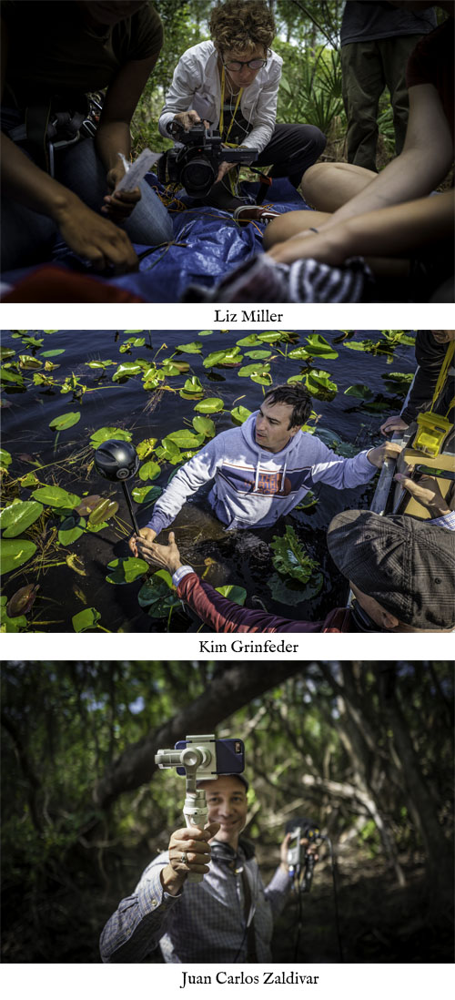

About us
 We are invested in the method of co-creation and the need to work across disciplines. As educators ourselves we know that classrooms are a powerful portal to social transformation especially when students and teachers tackle complex social problems and engage with
About SwampScapes
Many of us are disconnected from the beauty of swamps and the vital role they play in filtering water, fostering life, and buffering storms. Today, coastal development, pollution, and sea-level rise are threatening these invaluable landscapes. One of the biggest threats to swamps is a human disconnect from the environment and a lack of understanding of the role that swamps play in human survival. In a time of accelerated change and unpredictable weather, it has never been more important to look, listen, and learn from the swamps around us.
This is especially true for South Florida, home to the Everglades, one of largest swamps in the world. Up until 1900, all of South Florida was one big swamp. To make way for development, the city drained the swamp and diverted the natural water flow, changing its essential water filtering and supply system forever. A rapid expansion of urbanization and agricultural growth has led to a host of environmental problems, making the Everglades a skeleton of what it once was. We can’t turn back the clock, but we can learn to co-exist with our disappearing swamps and find ways to negotiate a fast-changing future.
Through passionate local guides, immersive landscapes, and an interactive Swamp Symphony, this documentary project leads users into the depths of Florida’s swamps and to the people who care about them. This website is a companion to our VR project.
PRODUCED & DIRECTED BY
Elizabeth Miller, Kim Grinfeder and Juan Carlos Zaldivar
CURRICUM DEVELOPMENT
Bertha Vazquez
PHOTOGRAPHS
Grant Bemis
There are many people who made SwampScapes a reality. Make sure to check out the Full Credit List
We thank our students and all those involved who are tireless advocates for the Everglades.
CREATED WITH SUPPORT FROM:
University of Miami, Center for Communication, Culture & Change
Concordia University, Canada
John S. and James L. Knight Foundation
University of Miami School of Communication